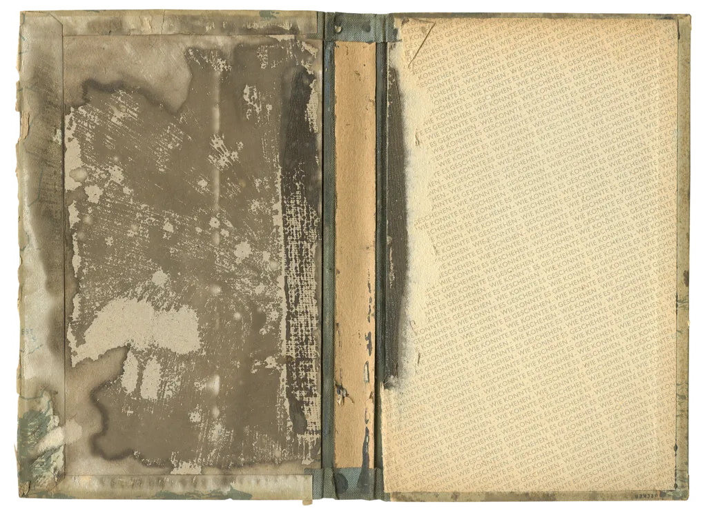
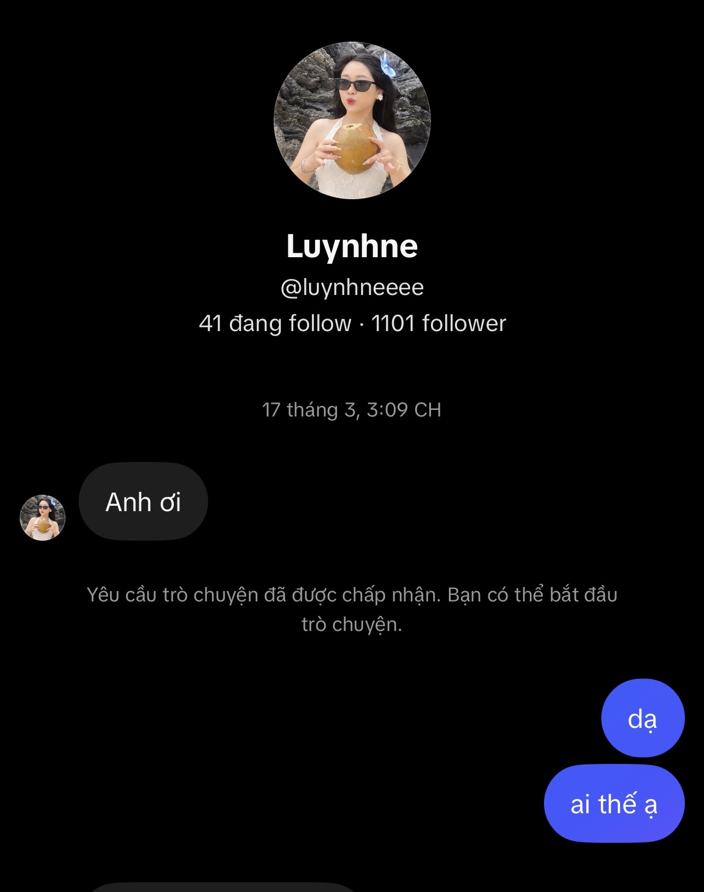
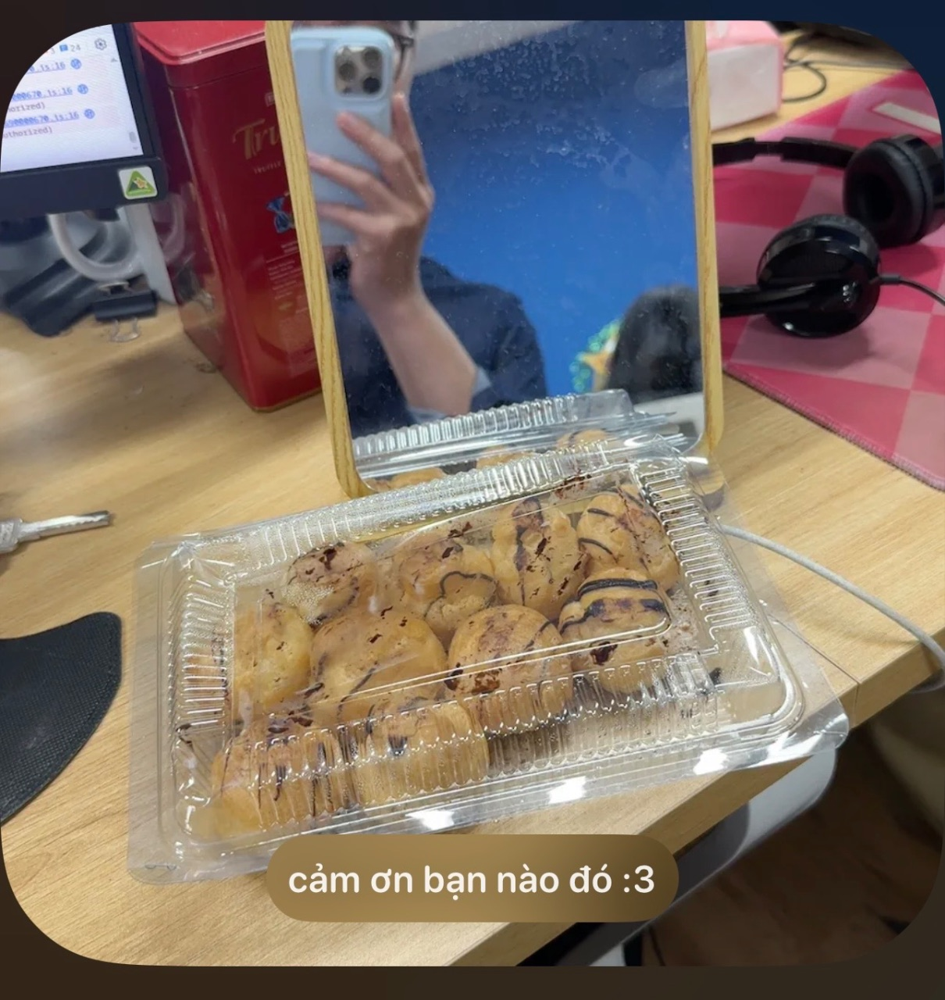
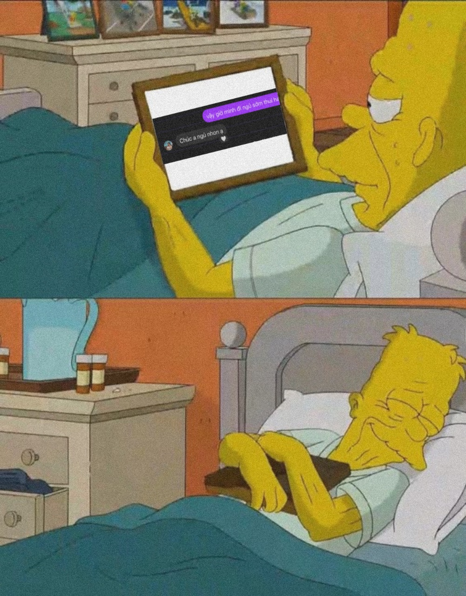

Thân gửi Luy naaa ^^

Thân gửi Luy naaa ^^

Này chắc là tin nhắn đầu tiên tụi mình gửi cho nhau ^^
Lúc này a vẫn chưa có ấn tượng gì đặc biệt về em cả :v Anh còn chưa bấm vào xem profile vì chỉ nghĩ đơn thuần em là ứng viên xin việc nên giới thiệu cho cty thui.
Một thời gian sau không thấy em nhắn gì thêm cũng không thấy HR báo gì nên a nghĩ là e toạch rui

Và rồi một ngày cuối tháng 5 thời tiết oi ả , em rep story a, từ đấy mình cũng đò đưa nói chuyện với nhau nhiều hơn...^^
Anh cũng khá bất ngờ vì em thấy anh từ trước rui mà giấu, giá mà anh bắt được tín hiệu này sớm hơn nhỉ =))))

Anh thấy mình cũng nói chuyện được một khoảng thời gian không ngắn cũng không dài, nhưng đủ để anh cảm nhận được một phần nào đó về con người của em.
Và anh cũng không muốn để em đợi lâu , gặp em nhận bánh một chút mà anh đã thấy bối rối rùi, vậy cần làm gì đó để gỡ rối em nhỉ =)))